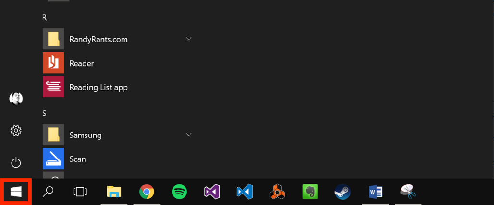
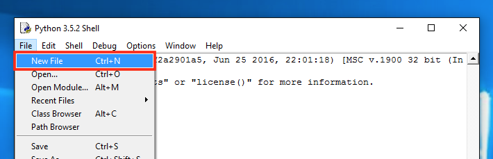

Installing and Using Python:
The World's Programming Language
Table of Contents
- Programming With Python
- Needed Materials
- Installing Python and IDLE
- Programming in Python with IDLE
- "Hello, World!" - Your First Program
- Using "if" Statements
- Where to Go From Here
Programming with Python
The Python programming language is gaining popularity as a fundamental tool for scientific computing. Python cuts out some unnecessary syntax that other languages require, which lends to its relative simplicity. Not only is it simple to write, it is easy to learn.
Python's popularity means there is a rich pool of learning resources and Q&A databases from which you can draw. These resources are especially useful after you download, install, and feel comfortable using, the Python programming environment.
This guide will get you there by walking you through the steps to install and setup Python. You also will learn basic Python programming.
Needed Materials
- 15-20 minutes to complete the guide
Installing Python and IDLE
- Go to http://www.python.org/downloads.
- Click the button that says 'Download Python 3.5.2.'
- Run the downloaded file once downloaded.
- Click 'Install Now' in the installation window.
- Click 'Yes' if asked to allow changes to your device.
-
Click 'Close' once the installation is complete.
The installation will begin and make take a few minutes. Once finished, you should see:
If you see this, the installation was successful and you can continue. If you see something else, try going back to Step 3 and reinstalling Python.
-
Start Python and IDLE by opening the "Start Menu", then type 'idle', and then press
Enter.You can open the "Start Menu" by clicking the icon in the lower left of your screen.
You then can type 'idle'.
-
Confirm a new window named 'Python 3.5.2' appeared.
If this window did not open, go back and retry Step 7.
Congratuations, you have successfully installed Python and launched IDLE!
Programming in Python with IDLE
In the previous section you installed and launched IDLE. We now will teach you basic principles of coding using IDLE.
Below are sections to help you through your first two programming experiences using IDLE. To start, we need to learn how to use IDLE and how to create and run code.
"Hello, World!" - Your First Program
"Hello, World!" is a simple computer program that beginners write to learn how to use programming tools like IDLE. You should already have IDLE open and launched from the installation. If not then refer back to Step 7 from the previous section.
The goal of this program is to create and run code that says "Hello, World!" After you should be familiar with the following concepts in IDLE.
- Creating a new file
- Saving your code
- Running your code
- Viewing the result of your program in the IDLE window
-
Open a new file in IDLE.
To open a new file you go to
File > New File. -
Copy and paste the code below into the new file.
print('Hello, World!')The code above types/prints "Hello, World!" to IDLE window. It uses a function called
printto do so. Each programming language is different, so this only works in Python. -
Save and run the code.
After the code is in the new file, go to
Run > Run Module.The new file window then asks where you want to save your code. Go ahead and name it "Hello World" and save it on your desktop.
-
Check that
Hello, World!was printed in the IDLE window.At this point you should see something similar above. If not, make sure the code provided in Step 2 matches the code in your new file.
If not, change it to match and go back to Step 3.
-
Change your code to the example provided below and re-run your code.
print('Hi, World!')Changing and re-running the code shows how you can modify your code and run it at anytime.
Now go to
Run > Run Moduleagain and look at the new output! The IDLE window now showsHi, World!belowHello, World!. The most recent output is always shown at the bottom.
Congratulations! You now know how to make a new file, write your own code, save it, and run it! We’ll now go to the next exercise.
Using if Statements
In this section we will show you how to create a program that compares two numbers and tells you which of the two numbers is greater (for example, is 3 > 4?). if statements will be used to have the program compare the two numbers for us and then determines which is largest.
This program also introduces new programming functions. After making this program you should be familiar with the following concepts.
- Variables
- Accepting input from the user
ifstatements- Formatting a
printstatement
-
Open a new file in IDLE.
To open a new file from IDLE go to
File > New File. -
Copy and paste the code below into the new file.
variable1 = 4 variable2 = 6The code above creates two variables named
variable1andvariable2. Their values are4and6. -
Replace 4 and 6 with
inputfunctions.We will modify the variables we created to allow the users to type in their own numbers when we run the program. To do this we will use the
inputfunction.
inputis a function that prints out what is in the parentheses and then waits for the user to type in a value. We want this value to become the value of the variables we have.To replace
4and6withinputfunctions, copy and paste this code.variable1 = input('Type in the first number and press Enter: ') variable2 = input('Type in the second number and press Enter: ')Whatever is typed by the user is then stored into the variable named
variable1. This is similar to a variable in mathematics. The same happens forvariable2.Feel free to run this program and see how the shell window waits for the user to type in the first number before it moves on to the next number.
-
Add
ifstatements to compare the variables by copying and pasting the following code.The code below is how your code should look after adding the
ifstatements. Copy and paste this code into the new file.variable1 = input('Type in the first number and press Enter: ') variable2 = input('Type in the second number and press Enter: ') if variable1 > variable2: if variable2 > variable1:Above we use the
>symbol to ask if the variable on the left side is greater than the one to the right. What's important now is that you tell the user if it is by using aprintfunction! -
Add
printfunctions to inform the user which variable is larger by copying and pasting the following code.The code below is how your code should look after adding the
printstatements. Copy and paste this code into the new file.variable1 = input('Type in the first number and press Enter: ') variable2 = input('Type in the second number and press Enter: ') if variable1 > variable2: print(variable1 + " is greater than " + variable2 + ".") if variable2 > variable1: print(variable2 + " is greater than " + variable1 + ".")Above we added code after the colons. The code after the colons runs only if the statement expressed is true.
You also can see that we use
variable1andvariable2in theprintfunctions. This prints the value that the user typed in. The + symbol makes the variables and typed words into one statement.For example, if the user types in
1and3, the firstifstatement is false so it does not print the statement. The second is true and so it prints "3 is greater than 1." -
Run and test the code.
You can run it by going to
Run > Run Module. If you are asked to save your code, name it "If Statements"You can now test your code! You should see results similar to the example below.
Re-run your code and try different values to make sure it runs correctly!
Where to Go From Here
Congratulations on setting up your Python programming environment! You are on your way to becoming a programmer. As suggested earlier, we recommend using the rich pool of learning resources and Q&A databases that exist online for your programming needs.
One indispensable Q&A database is Stack Overflow. This website contains hundreds of thousands of answers covering a wide array of programming questions. So, if you have a coding question, it is likely you can find an answer to a comparable question in this database.
If you wish to learn more programming, Code Academy is a great resource. You can find introductary, intermediate, and advanced Python turorials at Code Academy Python. Have fun coding!